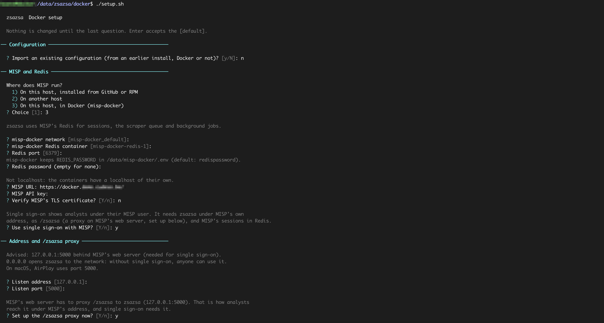
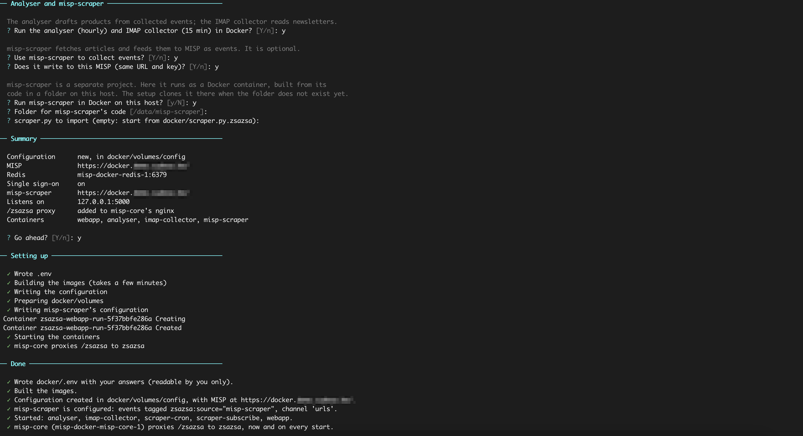
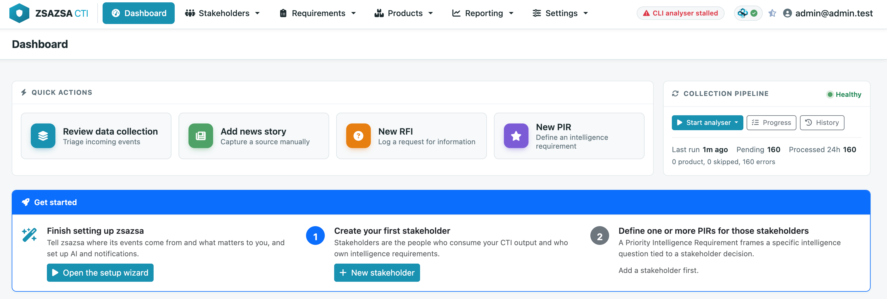
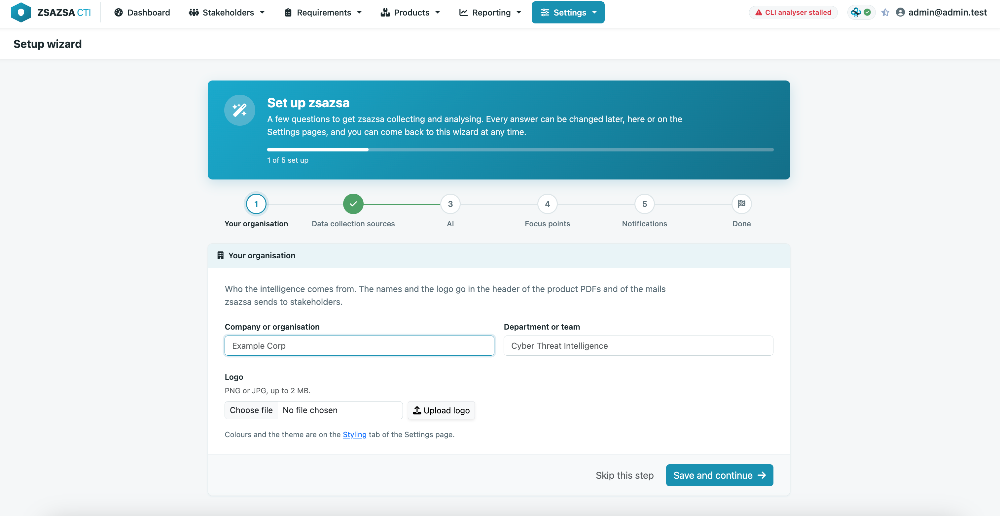
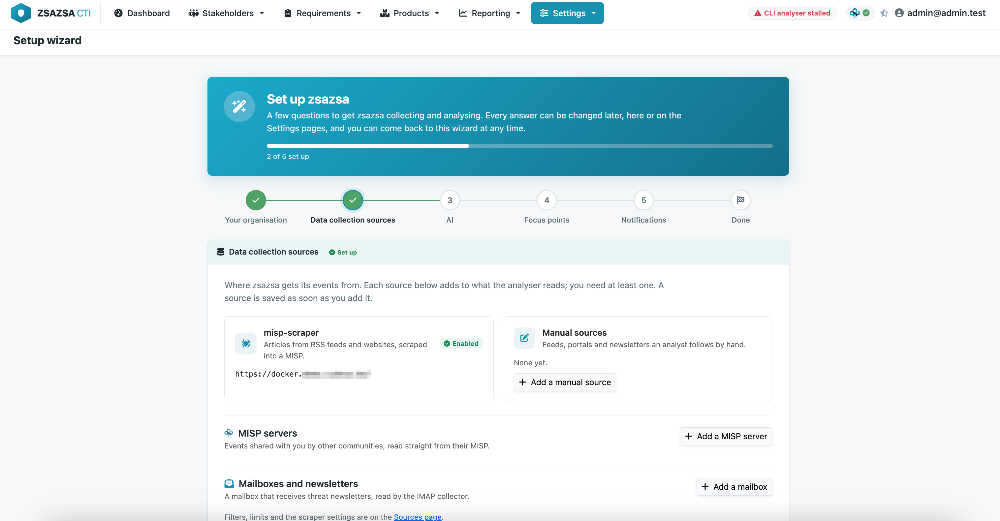
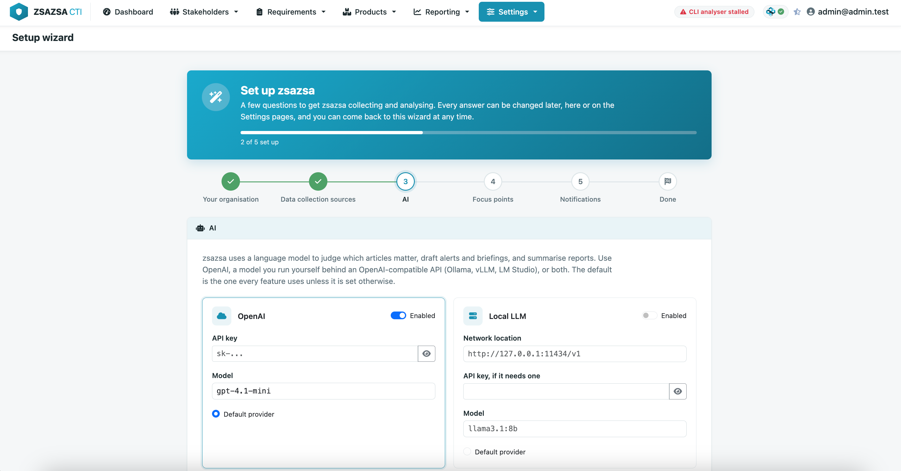
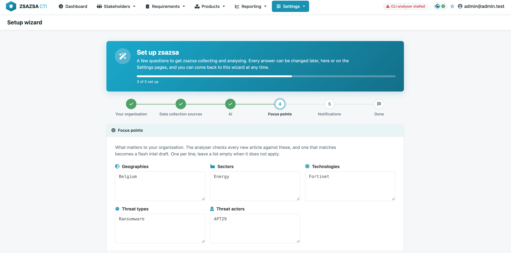
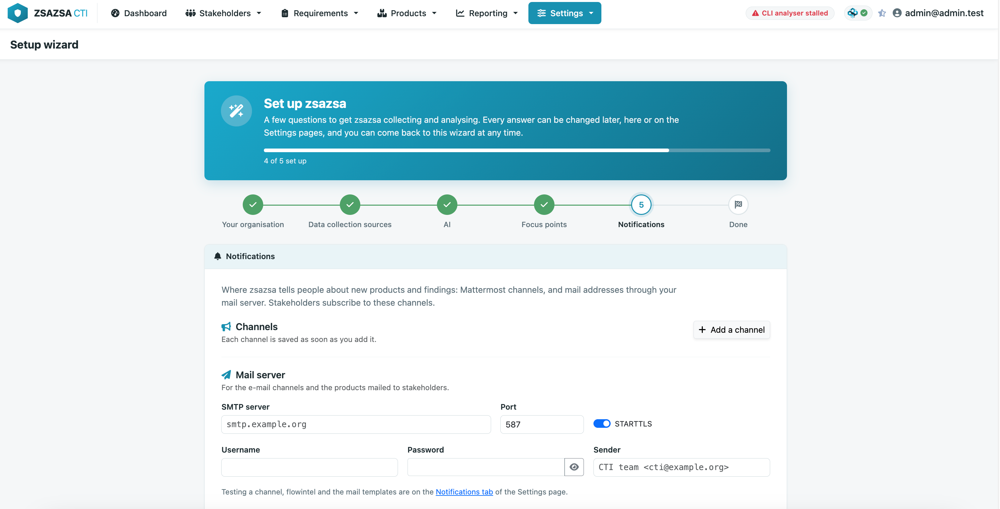
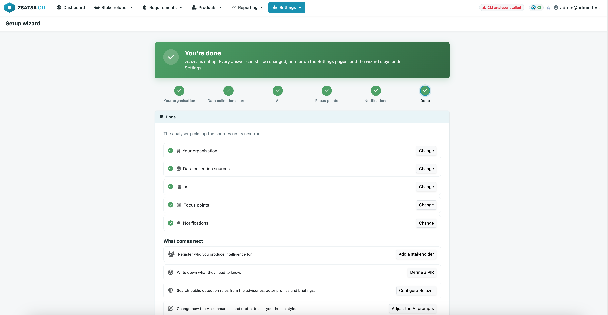

From a fresh checkout to a first daily threat briefing in a stakeholder's inbox. This page is the short path. The README on GitHub describes every feature and every setting.
zsazsa sits on top of MISP and keeps all its records there. It does not install MISP for you.
One MISP stores zsazsa's records. Events to work on come from misp-scraper, from other MISP servers, from newsletters and from what analysts add by hand. misp-scraper can write to that same MISP.
Docker is the quickest way in: one script asks how your MISP runs and sets up the rest. The standard installation runs zsazsa from a Python virtual environment, in MISP's own directory.
You need Docker with the compose plugin (docker compose version should answer), on the host where MISP runs. MISP can be installed normally or with misp-docker.
git clone https://github.com/zsazsa-project/zsazsa.git
cd zsazsa
bash docker/setup.shThe script asks where MISP runs (on this host, on another host, or in misp-docker), its address and API key, where its Redis is, and whether to use single sign-on. Then it asks where zsazsa listens, whether to add the /zsazsa proxy to MISP's web server, and whether to run the analyser, the IMAP collector and misp-scraper in Docker too. For misp-docker, its Redis password is REDIS_PASSWORD in misp-docker's .env.

Building the image takes a few minutes. The script ends with what it did, where zsazsa can be reached and what is left to do.

Open zsazsa under MISP's address, https://your-misp/zsazsa/, logged in to MISP as a site admin, and go on with step 2.
docker/volumes/config/__init__.py, never from docker/.env, which only tells Docker Compose how to run the containers. Change a setting on the Settings page, or edit that file and run docker compose restart. To change an answer, run bash docker/setup.sh again: your configuration and data are kept.The Docker README covers where your files are, the everyday commands, upgrading and what to check when something does not work.
zsazsa needs Python 3.10 or later, with venv and pip, and the libraries WeasyPrint uses to render product PDFs. On Debian or Ubuntu:
sudo apt-get install python3-venv python3-pip python3-dev git \
libcairo2 libpango-1.0-0 libpangocairo-1.0-0 libgdk-pixbuf-2.0-0 \
libffi-dev shared-mime-infoInstall it in MISP's custom directory, as the web user MISP runs under (www-data on Ubuntu):
sudo mkdir -p /var/www/MISP/misp-custom
sudo chown www-data:www-data /var/www/MISP/misp-custom
cd /var/www/MISP/misp-custom
sudo -u www-data git clone https://github.com/zsazsa-project/zsazsa.git zsazsa
cd zsazsa
sudo -u www-data bash docs/install.shThe installer creates the virtual environment in venv/, installs the dependencies and writes config/__init__.py with a generated SECRET_KEY. Answer no to its certificate question: MISP's web server takes care of TLS.
Set the MISP connection in config/__init__.py. Everything else can be done from the web interface.
MISP_WEBAPP_URL = 'https://misp.example.com'
MISP_WEBAPP_KEY = '<API key>'
MISP_WEBAPP_VERIFYCERT = True
# With misp-scraper: the MISP it writes to (it can be the one above)
MISP_URL = 'https://misp.example.com'
MISP_KEY = '<API key>'
# Without misp-scraper:
# MISP_SCRAPER_ENABLED = FalseAnalysts open zsazsa as https://misp.example.com/zsazsa. Being under MISP's own address is what makes single sign-on work: the browser only sends MISP's session cookie to that address. Enable the proxy modules with sudo a2enmod proxy proxy_http headers, then add this inside the <VirtualHost *:443> block of MISP's Apache configuration and reload Apache:
# zsazsa CTI application
ProxyPreserveHost On
RequestHeader set X-Forwarded-Prefix "/zsazsa"
RequestHeader set X-Forwarded-Proto "https"
ProxyPass /zsazsa http://127.0.0.1:5000/ timeout=300
ProxyPassReverse /zsazsa http://127.0.0.1:5000/Run zsazsa as a service, listening on 127.0.0.1 only. The template has the paths for the installation above; uncomment its ZSAZSA_BIND=127.0.0.1 line.
sudo cp docs/zsazsa.service.template /etc/systemd/system/zsazsa.service
sudo systemctl daemon-reload
sudo systemctl enable --now zsazsa.serviceThe analyser and the IMAP collector run from the web user's crontab:
15 * * * * cd /var/www/MISP/misp-custom/zsazsa && venv/bin/python run_analyser.py
*/15 * * * * cd /var/www/MISP/misp-custom/zsazsa && venv/bin/python run_imap_collector.pyOpen https://misp.example.com/zsazsa/, logged in to MISP as a site admin, and go on with step 2.
INSTALL.md has the details: other distributions, single sign-on and its Redis requirements, a MISP whose certificate comes from your own CA, and upgrading.
The setup wizard takes a site admin through what a new zsazsa needs. The dashboard points to it until zsazsa has a data collection source and focus points, and it is always under Settings > Setup wizard. Every step saves to the same settings as the Settings pages, so you can skip a step, come back later, or run the wizard again.
| Step | What you set |
|---|---|
| Your organisation | The name and logo used on product PDFs and notifications |
| Data collection sources | Other MISP servers, mailboxes with the newsletters they receive, and manual sources |
| AI | OpenAI or a local model. Optional: without it you write the text yourself |
| Focus points | The geographies, sectors, technologies, threat types and threat actors that matter to you, used to judge relevance |
| Notifications | Mattermost channels, and email channels with the mail server they use |







The scraper's filters and limits, the tags zsazsa uses, the prompts, the styling and single sign-on are on Settings > Configuration and Settings > Collection sources. The configuration reference describes each setting.
A first daily threat briefing, delivered to one stakeholder, goes through everything that has to work.
Under Stakeholders > Stakeholders, press Add stakeholder. Give it a name and a role (for example SOC), a TLP clearance, the notification channel you made in the wizard, and tick Daily threat briefing under the products it subscribes to. A briefing goes to every stakeholder subscribed to it whose TLP clearance covers the briefing's TLP.
Products > Data collection is where the daily work happens. Events from misp-scraper and the other MISP servers appear there once the cache has refreshed, every 15 minutes or when you press Refresh cache. With no source yet, press Manual entry, pick a manual source, give the event a title and some content, and press Create event.
Tick one or more events and choose Create product > Add to daily briefing (new). The briefing opens with one story per event. Set the TLP, write the stories and a summary, or let Draft everything do it when AI is set up. Press Save draft, then Publish briefing on the briefing's page.
Delivery runs in the background. The badge in the top bar shows the job, Reporting > Pipeline keeps the history, and the stakeholder receives the briefing on their channel.
admin@admin.test with full rights until single sign-on is switched on.